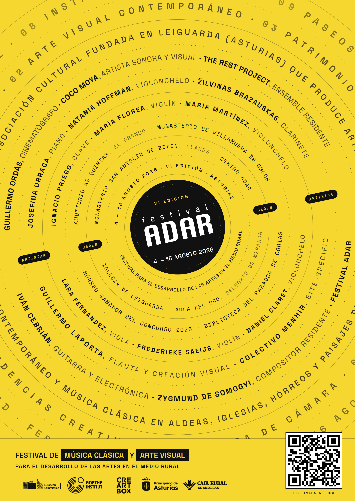

Festival ADAR 2026

ADAR returns to rural Asturias for its sixth edition: two weeks of chamber music, site-specific performance, and visual-art residencies set in churches, hórreos, mountain villages, and the auditoriums of the region.
The 2026 edition builds around three threads - a chamber-music core with international guests, a touring sub-programme ("ADAR en Ruta") that brings concerts to small Asturian towns, and a series of micro-concerts in unconventional spaces.
Festival schedule
- Aug 4De danzas y sonatas · micro concierto · recital de claveHórreo ganador del concurso 2026
- Aug 5La forma de la memoria · ADAR en Ruta · trío con pianoBiblioteca del Parador de Corias, Cangas del Narcea
- Aug 6La forma de la memoria · ADAR en Ruta · trío con pianoMonasterio de San Antolín de Bedón, Llanes
- Aug 7UMBRAL ZERO · música minimalista y arte visualAula del Oro, Belmonte de Miranda
- Aug 8Colectivo Menhir · intervención sonora site-specificPalomar de Leiguarda, Belmonte de Miranda
- Aug 9Colectivo Menhir · intervención sonora site-specificPalomar de Leiguarda, Belmonte de Miranda
- Aug 11ADAR en Ruta · música de cámara y arte visualAuditorio As Quintas, A Caridá (El Franco)
- Aug 12Micro concierto durante el eclipse · quinteto con pianoCentro ADAR, Leiguarda
- Aug 13ADAR en Ruta · música de cámara y arte visualMonasterio de Villanueva de Oscos
- Aug 14Equilibrium · muestra de residencia · The Rest ProjectSegundo hórreo ganador del concurso 2026
- Aug 15Paseo Sonoro en LeiguardaCalles de Leiguarda
- Aug 16Clausura · concierto de quinteto y espichaIglesia de Leiguarda
Performers
- Guillermo Laportaflute · artistic direction
- Josefina Urracapiano
- Frederieke Saeijsviolin
- María Martínezcello
- Ignacio Pregoharpsichord
- Maria Floreaviolin
- Lara Fernándezviola
- Daniel Claretcello
- Natania Hoffmancello
- Žilvinas Brazauskasclarinet
- Colectivo Menhirsound art · Coco Moya & Iván Cebrián
About CreArtBox
CreArtBox is a New York–based chamber music and multimedia ensemble founded in 2013, performing at The DiMenna Center for Classical Music and on tour internationally. The ensemble's New York Series presents approximately six productions a year - combining commissioned premieres, reimagined classics, and collaborations with visual artists, filmmakers, and writers.
In parallel, CreArtBox runs Festival ADAR each August in rural Asturias, Spain - an international arts festival pairing chamber music with site-specific performance in churches, hórreos, and mountain villages. Both the New York Series and Festival ADAR are produced by CreArtBox, Inc., a 501(c)(3) non-profit.